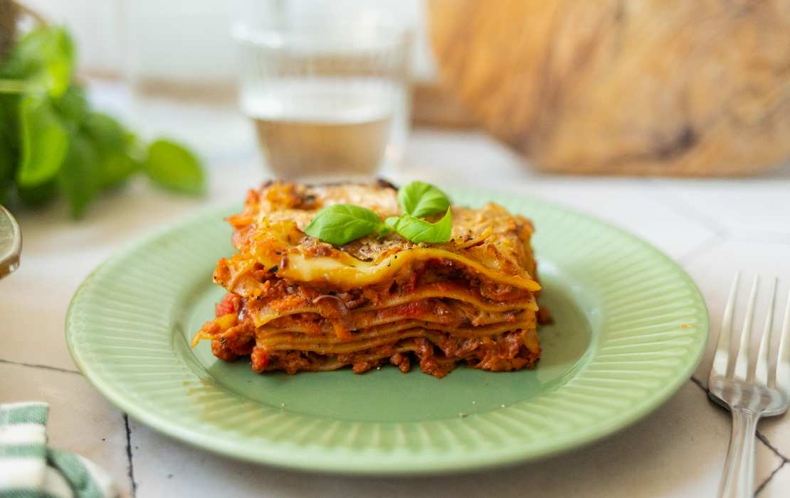

Vegane Lasagne mit Champignons

Warum vegane Lasagne?
Diese köstliche vegane Lasagne ist ein herzhaftes und saftiges Gericht, das selbst Fleischliebhaber überzeugen wird. Mit einer würzigen Champignon-Bolognese und einer cremigen veganen Béchamelsauce ist diese Lasagne der perfekte Comfort Food für jede Gelegenheit.
Zutaten:
Für die Champignon-Bolognese:
- 500g Champignons, fein gehackt
- 1 große Zwiebel, fein gewürfelt
- 2 Karotten, fein gewürfelt
- 1 Selleriestange, fein gehackt
- 3 Knoblauchzehen, gepresst
- 2 EL Olivenöl
- 2 EL Tomatenmark
- 800g passierte Tomaten
- 200ml vegane Gemüsebrühe
- 1 TL getrockneter Oregano
- 1 TL getrockneter Thymian
- Salz und Pfeffer nach Geschmack
Für die vegane Béchamelsauce:
- 60g vegane Margarine
- 60g Mehl
- 750ml ungesüßte Pflanzenmilch
- 1 Prise Muskatnuss
- Salz und Pfeffer nach Geschmack
Zusätzlich:
- 12-15 vegane Lasagneplatten
- 200g veganer Reibekäse
Zubereitung
- Für die Bolognese Olivenöl in einem großen Topf erhitzen. Zwiebeln, Karotten und Sellerie darin anbraten, bis sie weich sind. Knoblauch hinzufügen und kurz mitbraten
- Champignons hinzufügen und ca. 5-7 Minuten anbraten, bis sie Flüssigkeit abgeben und diese wieder verdampft ist
- Tomatenmark hinzufügen und kurz anrösten. Mit passierten Tomaten und Gemüsebrühe ablöschen. Oregano und Thymian hinzufügen, mit Salz und Pfeffer würzen. Bei mittlerer Hitze ca. 30 Minuten köcheln lassen
- Für die Béchamelsauce vegane Margarine in einem Topf schmelzen. Mehl hinzufügen und unter ständigem Rühren anschwitzen. Nach und nach Pflanzenmilch hinzugießen und dabei kontinuierlich rühren, bis eine glatte Sauce entsteht. Mit Muskatnuss, Salz und Pfeffer abschmecken
- Backofen auf 180°C vorheizen. Eine Auflaufform (ca. 20x30cm) leicht einfetten.
- Lasagne schichten: Beginnen Sie mit einer dünnen Schicht Bolognese, dann Lasagneplatten, Bolognese, Béchamelsauce. Wiederholen Sie die Schichten, bis alle Zutaten aufgebraucht sind. Die letzte Schicht sollte Béchamelsauce sein
- Veganen Reibekäse auf der obersten Schicht verteilen.
- Lasagne für ca. 40-45 Minuten backen, bis sie goldbraun und durcherhitzt ist
- Vor dem Servieren 10 Minuten ruhen lassen.
Guten Appetit!